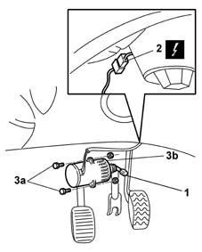

1060G34 POTENTIOMETER on ACCELERATOR pedal - R.R.
- Path
- Procedures > 10 ENGINE UNIT > 1060 DIESEL FUEL INJECTION > 1060G pressure pump electric control > 1060G34 POTENTIOMETER on ACCELERATOR pedal - R.R.
- Kind
- repair procedure (removal / refitting; the operation number is the code)
- Applies to
- engines: 1.9 JTD 8V; all production periods
- Interactive page
- https://sloeber94.github.io/elrnDB-fMltpl/en/#/2891416
Applies to: engines: 1.9 JTD 8V; all production periods
 Removing
Removing
 Refitting
RefittingDisconnect the battery negative (-) terminal.
1. Disconnect the potentiometer link from the accelerator pedal.
2. Disconnect the potentiometer electrical connection located near the injection control unit.
 | Name | Connector |
|---|---|---|
2 | Accelerator pedal potentiometer |
3. Unscrew bolts (3a) and remove potentiometer (3b) from its seat on the pedal unit.

Applies to: engines: 1.9 JTD 8V; all production periods
Refitting
RemovingPosition the accelerator potentiometer in its seat on the pedal unit.
Tighten the fixing bolts.
Connect the potentiometer electrical connection.
Connect the linkage to the accelerator pedal.
Adjust the accelerator pedal.
0520G65 ACCELERATOR PEDAL - End of travel adjustment with S.D.C.